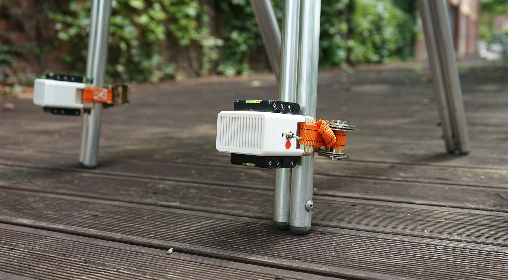
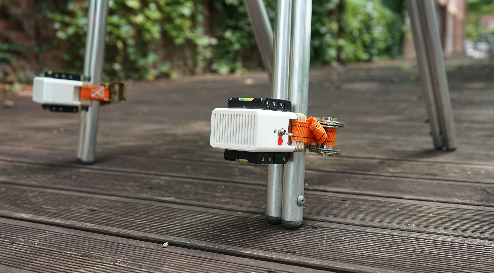
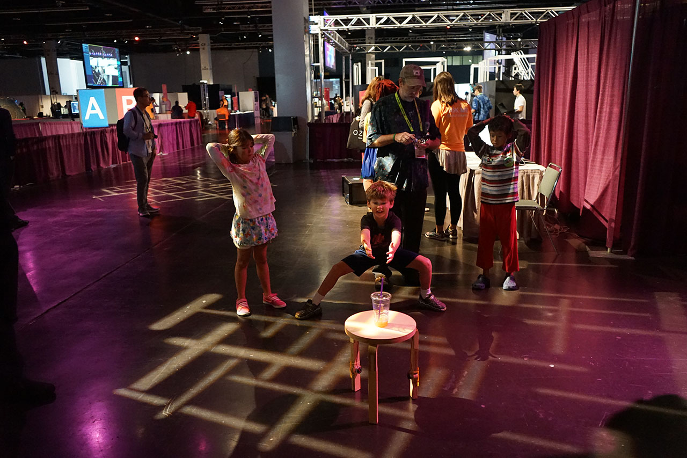
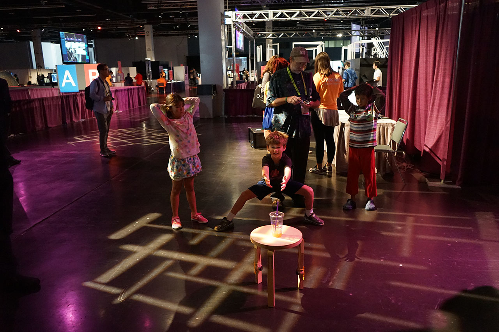

>Ratchair : A furniture learns to move itself with vibration
- Date:2016
- Category:Creative Projects
- Tags:Product Design
RatChair a strategy for displacing big objects by attaching relatively small vibration sources. After learning how several random bursts of vibration affect its pose, an optimization algorithm discovers the optimal sequence of vibration patterns required to (slowly but surely) move the object to a specified position.
RatChair from myDesignLab on Vimeo.
Concept
We designed sources of vibration that can be easily attached to furniture and objects. Embedding vibration modules as part of mass-produced objects may provide a low-cost way to make almost anything mobile. The principle is agnostic with respect to the shape of the object, number, type, or relative position of the actuators.
Papers
Furniture that learns to move itself
Tetiana Parshakova, Minjoo Cho, Alvaro Cassinelli and Daniel Saakes. In CHI ’17 Extended Abstracts on Human Factors in Computing Systems. 2017.
Ratchair: Furniture Learns to Move Itself with Vibration.
Tetiana Parshakova, Minjoo Cho, Alvaro Cassinelli and Daniel Saakes. In Siggraph ’16 Emerging Technologies. 2016.
Gallery
 

 
